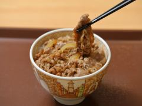
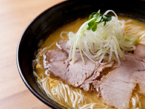

Food/Shop
! This page is under construction. !
There are not many restaurants or shops near the university. The following shops are located on campus.
Restaurants
Sukiya (beef bowl/curry/etc.)
1st floor of Shinrikan (Campus Map 9)
Open: 11:00—15:00

Ichibariki (ramen)
1st floor of Heirakukan (Campus Map 13)
Open: 11:00—16:00

Shops
Family Mart (convenience store)
1st floor of Tenchikan (Campus Map 1)
Open: 08:00—15:00
There is a lounge in front of the store where you can eat food you have bought or brought with you.
Maruzen (stationery)
1st floor of Tenchikan (Campus Map 1)
Open: 10:00—15:00
Book Center Ascella
1st floor of Yuhikan (Campus Map 7)
Open: 10:00—16:00